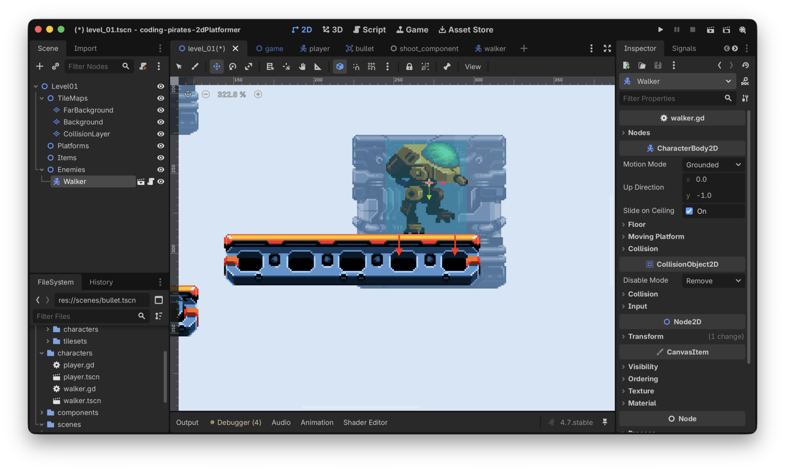
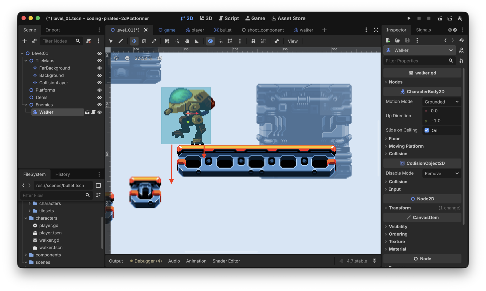
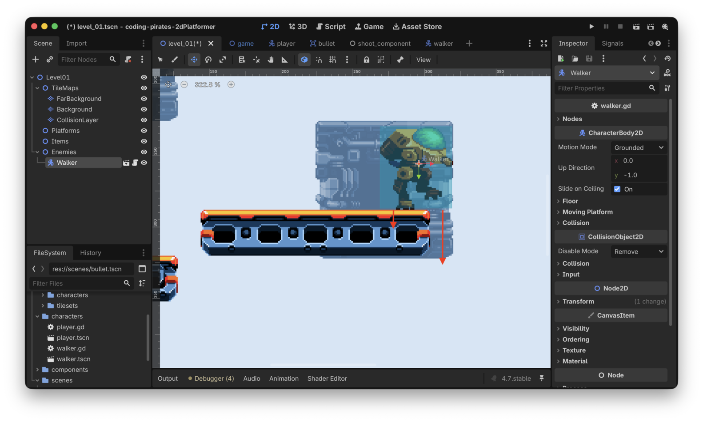
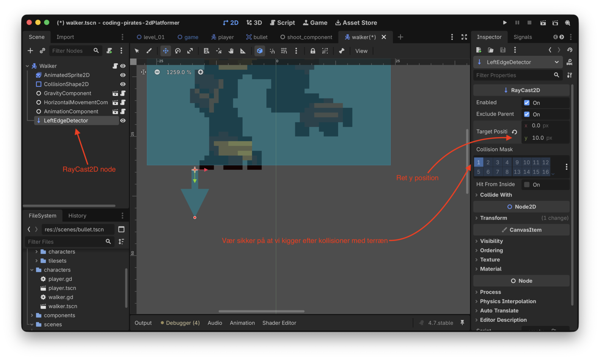
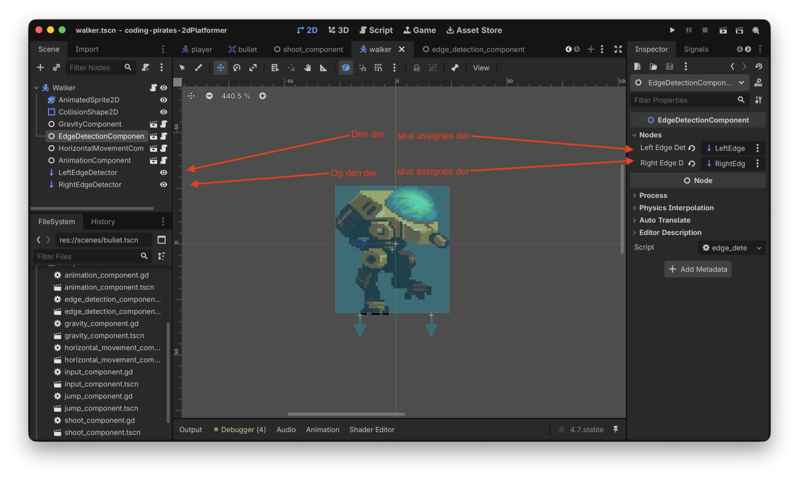
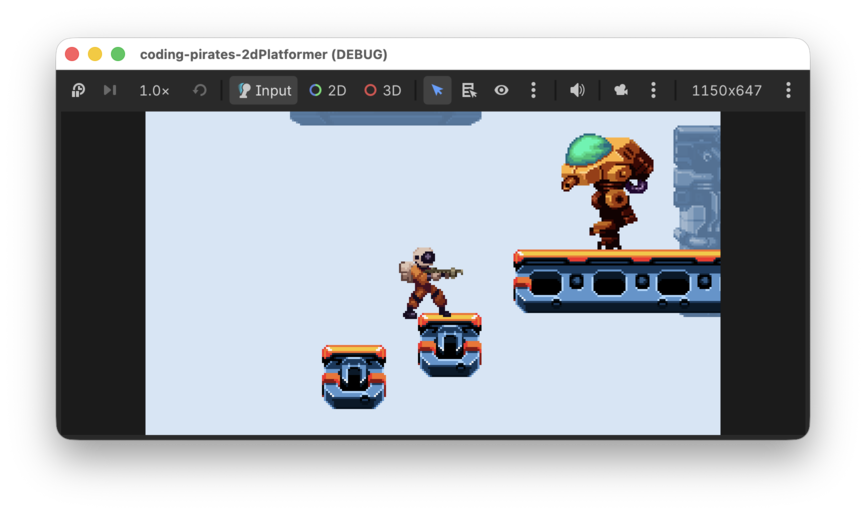
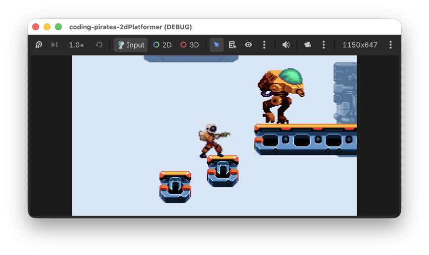

Godot 2D Platformer - level 11 fjender der vender
I level 10 Fik vi lavet en Walker der tramper frem og...nej ikke tilbage...endnu, det jo det vi skal at lave nu.
Problemet
Lad os lige gentage problemet.
- Vi har en Walker
- Den Walker har en
HorizontalMovementComponent - En
HorizontalMovementComponentkræver endirectionfor at vide hvilken vej vi skal gå directionskal være enten -1 hvis vi vil gå til venstre eller 1 hvis vi vil gå til højre- Hvor skal vi få den direction fra?
I level 10 løste vi det ved at sætte direction til altid at være 1, hvilket betød at vi altid gik mod højre og på et tidspunkt faldt vi ud over den platform vi gik på.
Så...vi vil gerne lavet "noget" sådan at vores Walker kan
- Gå på en platform, lad os sige at den starter med at gå mod højre så
direction= 1 - Når den rammer højre kant af platformen vil vi gerne have
den til at vende om, altså flippe
directiontil -1 - Og omvendt, når den rammer venstre kant af platformen vil
vi gerne have den til at vende om igen, altså flippe
directiontilbage til 1
Den gode nyhed er at det er nemt i Godot, vi kan bruge det der hedder
en RayCast2D til at hjælpe os.
RayCast2D
Vi læser i dokumentationen hvor der står:
A raycast represents a ray from its origin to its target_position that finds the closest object along its path, if it intersects any.
Huh?? OK vi læser det lige 4 gange mere og oversætter.
Altså, det er "noget" som kan sende en ray, altså en stråle fra dens origin, altså der hvor den er og hvis den stråle rammer nogle objekter på sin vej, så får vi besked. Forestil dig en lommelygte som du kan lyse med i et mørkt rum og som gør at du kan se ting som lyset rammer.
OK, hvad kan vi bruge det til?
Vi kunne jo sætte en RayCast2D node lige til venstre for
vores Walker og en anden RayCast2D node lige til højre for
vores Walker og lade dem begge to pege ned i jorden, og så kunne vi
spørge om de to rammer noget.
Hvis de begge to rammer noget ved vi at der er platform under os

Hvis den venstre ikke rammer noget ved vi at vi har ramt venstre side af platformen og kan så vende om

Og omvendt, hvis den højre ikke rammer noget ved vi at vi har ramt højre side af platformen og kan så vende om

Lad os lave det!
Hvad skal vi lave? Vi skal
Lad os komme i gang
Tilføj
RayCast2D noder til vores Walker
- Find
walker.tscni 2D mode og vælg/klik på rod "Walker" noden - Tilføj en
RayCast2Dchild node - Omdøb den til at hedde "LeftEdgeDetector"
- Træk den på plads så den sidder lige ud for venstre fod
- I "Inspectoren" i venstre side skal vi lige rette et par ting
- Under "RayCast2D" kan du rette y værdien for "Target Position" til at være 10, der er ingen grund til at kigge længere væk end 10 pixels
- Sæt "Collision Mask" til "Terrain", altså 1 sådan at vi kigger efter om vi rammer platforme
Det skulle gerne se sådan her ud

Nu kan du kopiere din LeftEdgeComponent og rette kopien til at hedde "RightEdgeComponent" og sætte den ud for din Walkers højre fod.
Det var skridt et
Lav ny
EdgeDetectionComponent
Vi kan starte med skelettet, det har ikke ændret sig.
- Lav en ny Node
- Kald den "EdgeDetectionComponent"
- Gem dem som
edge_detection_component.tscnunder "components" - Tilføj et script til "EdgeDetectionComponent"
- Tilføj
class_name EdgeDetectionComponenttil vores script
class_name EdgeDetectionComponent
extends NodeOg så er vi klar til logikken.
Adgang til left og
right RayCast2D noder
Ligesom i vores AnimationComponent laver vi det sådan at
vi, når vi sætter vores EdgeDetectionComponent op, skal
sætte en left_edge_detector og en
right_edge_detector op fra starten, så skal vi ikke bekymre
os om det mere.
Det betyder at vi skal have to @export variabler af
typen RayCast2D og vi er lige gode ved fremtids os selv og
putter dem i en fin subgroup så vi kan se dem i "Inspectoren" når vi
skal konfigurere.
@export_subgroup("Nodes")
@export var left_edge_detector: RayCast2D
@export var right_edge_detector: RayCast2Dhandle_edge_detection
funktion
Og så er vi klar til selve logikken. Hvad er det nu vi gerne vil?
Vi vil gerne tage den nuværende direction som vores
Walker går i som en input parameter og så vil vi kigge på om
- Hvis
left_edge_detectorogright_edge_detectorbegge to rammer jorden, så er vi stadig på en platform og så sender vi bare den nuværendedirectionretur - Hvis
left_edge_detectorikke rammer jorden er vi på vej ud over venstre kant og skal derfor vende os om og gå mod højre, altså skaldirectionnu være 1 - Omvendt, hvis
right_edge_detectorikke rammer jorden er vi på vej ud over højre kant og skal derfor vende os om og gå mod venstre, altså skaldirectionnu være -1
Det efterlader så spørgsmålet...hvordan kan vi spørge en
RayCast2D node om den rammer jorden? Vi må tilbage i
dokumentationen og grave og vi finder funktionen is_colliding,
det er jo præcis den vi skal bruge.
Så har vi alle brikker til puslespillet og kan gå i gang, prøv selv!
- Funktionen skal hedde
handle_edge_detection - Den skal tage en parameter af typen
floatsom vi kaldercurrent_direction - Den skal returnere en værdi af typen
float - Og så skal den indeholde logikken ovenfor
Her er hele vores forsøg
class_name EdgeDetectionComponent
extends Node
@export_subgroup("Nodes")
@export var left_edge_detector: RayCast2D
@export var right_edge_detector: RayCast2D
func handle_edge_detection(current_direction: float) -> float:
# rammer både venstre og højre edge detector jorden?
if left_edge_detector.is_colliding() and right_edge_detector.is_colliding():
# ja det gjorde de, så bare gå videre i samme retning
return current_direction
# nå, vi er ved at ramme en kant
# er det venstre kant?
if not left_edge_detector.is_colliding():
# ja det er det, vend om og gå mod højre
return 1.0
# det var ikke venstre kant, er det højre så?
if not right_edge_detector.is_colliding():
# ja det er det, vend om og gå mod venstre
return -1.0
# logisk skulle vi ikke kunne ende her så vi returnerer
# current_direction
return current_directionDet var skridt to
Brug
vores nye EdgeDetectionComponent med vores Walker
Det er den nemme del!
- Du skal have tilføjet
EdgeDetectionComponentsom en en Child Scene på dinwalker.tsch - Og som en
@export var edge_detection_component: EdgeDetectionComponenti ditwalker.gdscript - Og så skal du have bundet tingene sammen, husk at sætte
LeftEdgeDetectorogRightEdgeDetectorop i de to variabler du lavede i ditedge_detector_component.gdscript
Det ser sådan her ud:

Og så kan vi opdatere vores walker.gd script til at
opdatere current_movement_direction ved hjælp af
edge_detection_component.handle_edge_detection i
_physics_process
Her er hele walker.gd scriptet:
extends CharacterBody2D
@export_subgroup("Nodes")
@export var animation_component: AnimationComponent
@export var edge_detection_component: EdgeDetectionComponent
@export var gravity_component: GravityComponent
@export var horizontal_movement_component: HorizontalMovementComponent
var current_movement_direction: float = -1
func _ready() -> void:
horizontal_movement_component.speed = 50
func _physics_process(delta: float) -> void:
gravity_component.handle_gravity(self, delta)
current_movement_direction = edge_detection_component.handle_edge_detection(current_movement_direction)
horizontal_movement_component.handle_horizontal_movement(self, current_movement_direction)
# Husk den her!
move_and_slide()
func _process(delta: float) -> void:
animation_component.handle_move_animation(current_movement_direction)Kør dit spil og hold øje med Walkeren der nu forhåbenlig går frem og tilbage på platformen.


Godt arbejde!
Vi har nu nogle fjender der bevæger sig nogenlunde
intelligent. Hvis du vil kan du jo også bruge
EdgeDetectionComponent til at få fjender til at gå mellem
to vægge, det kræver bare at dine RayCast2D noder peger til
siderne i stedet for at pege nedad.
I næste lektion skal vi til at skyde på vores fjender, vi ses!